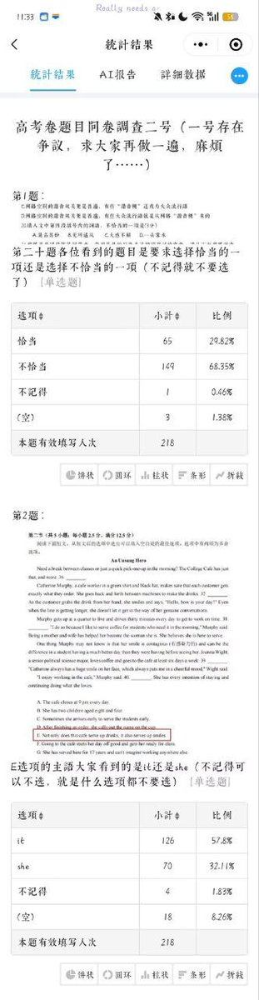
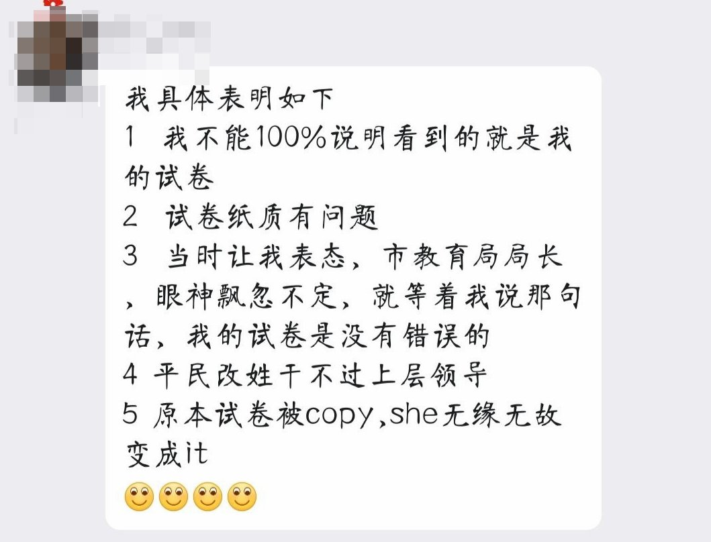

担麦人
@xccpma
@whyyoutouzhele 你们今天就敢看合订本，明天干什么都不敢想😤


李老师不是你老师
@whyyoutouzhele
高考试卷疑似出现印刷错误事件仍在发酵，初期福建考生做过社会调查，结果出现巨大分歧，福建官方表示已经核实，印刷不存在问题。安徽一考生希望查看原卷，但真正看到后表示原卷可能存在问题，他的原卷是“正确”印刷版本。山东一考生也得到查看原卷机会，最终表示印刷无误，签署保密协议；有考生致电省考 https://t.co/RSqPVVDjT4 https://t.co/XRzwvLtoOy